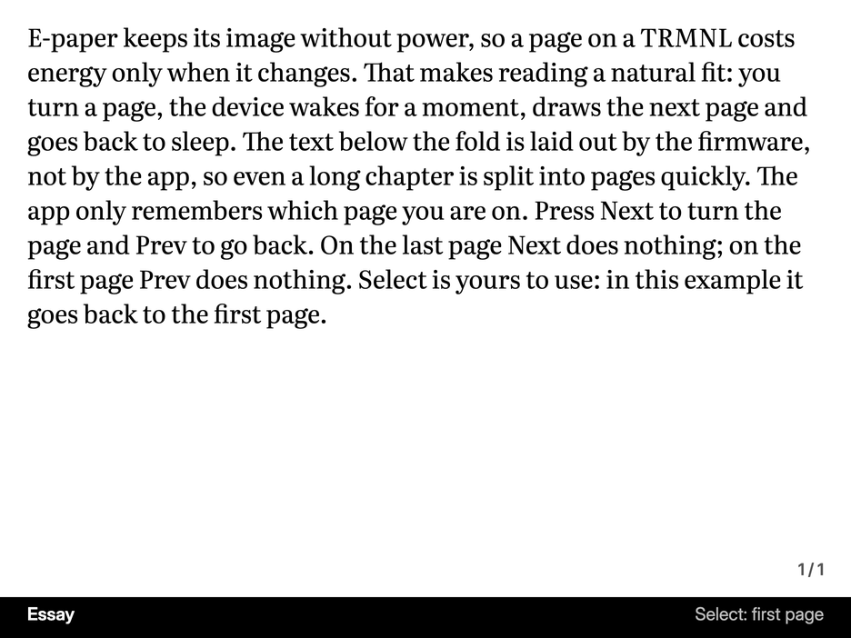
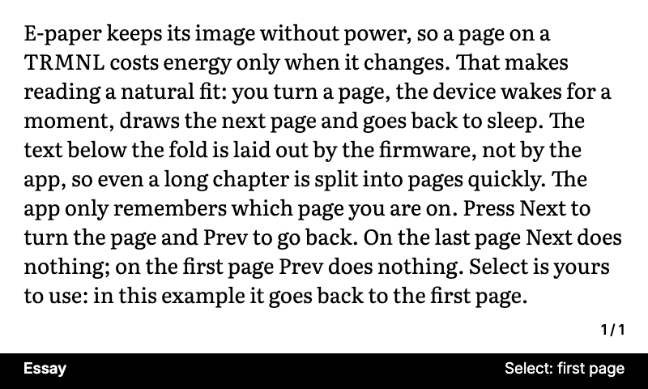

Declaration
function Reader(text: string, page: State): ReaderView onSelect(action: (page: i32) => void): ReaderView label(text: string): ReaderView // replaces the "p / n" in the corner
Parameters
text- The whole text. Literata 18 pt, line spacing 1.4.
page- The
Statethat holds the current page (from 0). action- Called by Select with the current page.
Discussion
The firmware splits the text into pages natively on every draw, so changing the device or the text never breaks the page count. The current page and the count are shown in the bottom right.
| Press | What the reader does |
|---|---|
| Next | next page (stays on the last) |
| Prev | previous page (stays on the first) |
| Select | calls action(page) |
A book: one exact page at a time
For a long file the app does not pass the whole text: Files paginates it for the reading layout (a Reader filling a Layout(_:) above a TitleBar(_:_:)) and Files.readPage(i, n) returns exactly page n. Shown in that layout it fills one page, no more. label("41 / 340") puts the book's page number in the corner instead of the Reader's own count.
// Name: Essay import { App, View, Layout, Reader, TitleBar, state, register } from "./trmnl-ui"; export { trmnl_event } from "./trmnl-ui"; const TEXT = "E-paper keeps its image without power, so a page on a TRMNL costs energy only when it changes. " + "That makes reading a natural fit: you turn a page, the device wakes for a moment, draws the next page and " + "goes back to sleep. The text below the fold is laid out by the firmware, not by the app, so even a long " + "chapter is split into pages quickly. The app only remembers which page you are on. " + "Press Next to turn the page and Prev to go back. On the last page Next does nothing; on the first page Prev " + "does nothing. Select is yours to use: in this example it goes back to the first page."; const page = state("page"); function restart(p: i32): void { page.value = 0; } class Essay extends App { body(): View { return Layout([ Reader(TEXT, page).onSelect(restart), TitleBar("Essay", "Select: first page"), ]); } } register(new Essay());


Page 2 after one press of Next.
See Also
StateAn integer that survives every wake.
Layout(_:)Stacks views from top to bottom with the TRMNL margins.
How Next, Prev and Select reach your views on a touchbar and on a single button.